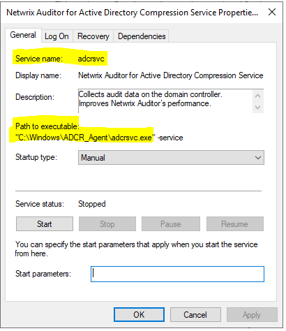

Symptom
After uninstallation of Netwrix Compression Service, it does not appear under Programs and Features in the Control Panel, but still exists in the Services Overview.
Cause
Compression service components were not completely removed during uninstallation.
Resolution
You can manually delete the Service and its components. For that:
-
Open the Services snap-in and open properties of the problematic service.
-
Copy the full name of the service and the path to executable, for example, to a Notepad document.
 -
Run the command prompt as administrator and run the following command:
sc delete <service_namewhere the <
service_name>is the full name of the service you copied on the step 2. -
After that, navigate to the file path you copied earlier and delete all the files.